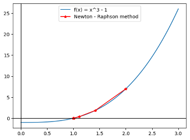
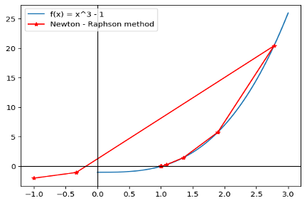
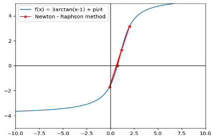
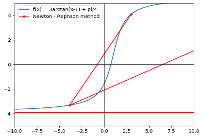
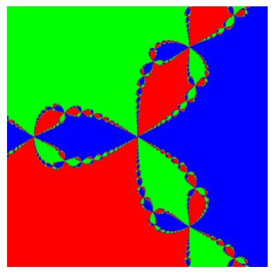
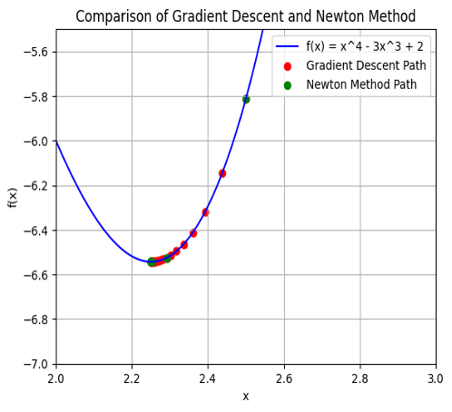
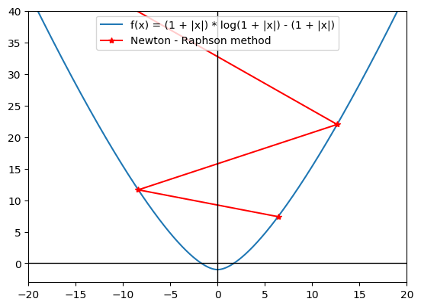
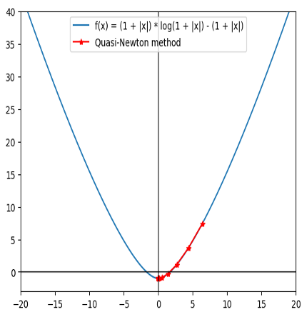

研究概要
ニュートン–ラフソン法（以下、ニュートン法）を中心に、最急降下法や準ニュートン法との比較を行い、
それぞれの手法の収束性、初期値依存性、計算コストを検討した。特に、複素平面における初期値鋭敏性やカオス理論との関連、
多変数関数への拡張性についても考察を行った。
🎓 研究タイトル
非線形最適化におけるニュートン法の挙動と他手法との比較
1. 背景・目的
ニュートン法は古くから使われてきた数値計算アルゴリズムであり、非線形方程式の数値解を効率的に求める手法として知られている。
本研究では、収束の速度や安定性に焦点をあて、特に初期値による挙動の違いや他の最適化手法との性能比較を目的とした。
2. 使用ツール・技術
- Python
- ライブラリ：NumPy、Matplotlib
- 手法：
- ニュートン法
- 最急降下法
- 準ニュートン法
- 複素数平面のフラクタル可視化
3. 分析対象
対象関数：
- y = x³ – 1
- y = 3 arctan(x – 1) + π/4
- z³ – 1 = 0（複素関数）
- f(x) = x⁴ – 3x³ + 2
- f(x, y) = x² + y² – 4x – 6y + 13
4. 分析プロセス
- 収束性の検証：
単純な関数で初期値ごとの収束の様子を可視化。
- 
- 
- 複雑な関数での応用：
非線形関数において収束しづらいケースの分析。
- 
- 
- フラクタル的挙動の可視化：
複素数領域における初期値鋭敏性の可視化。
- 
- 最急降下法との比較：
収束ステップ数と安定性を比較。
- 
- 準ニュートン法との比較：
ヘッセ行列不要なアルゴリズムとしての優位性を検討。
- 
- 
5. 結果・考察
- 初期値によっては収束が遅延する／しないケースが顕著に見られた。
- 複素数空間では、初期値によって異なる解に収束する領域がフラクタル構造を持つ。
- 最急降下法はステップ数が多く、精度を犠牲にしないと実用的でない。
- 準ニュートン法は安定性があり、ヘッセ行列の計算が不要な点で高次元解析にも向く。
6. まとめ・今後の展望
ニュートン法は初期値に敏感だが、収束速度は高速。今後は、初期値自動設定アルゴリズムとの組み合わせや、
深層学習などへの応用が期待される。また準ニュートン法など派生手法も含めて、対象関数の性質ごとに最適な手法を選択することが今後の課題となる。
- カオス理論との関連性の追究
- 準ニュートン法の高次元への応用
- 数値解法の組み合わせによるハイブリッド最適化